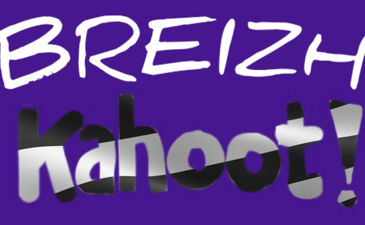
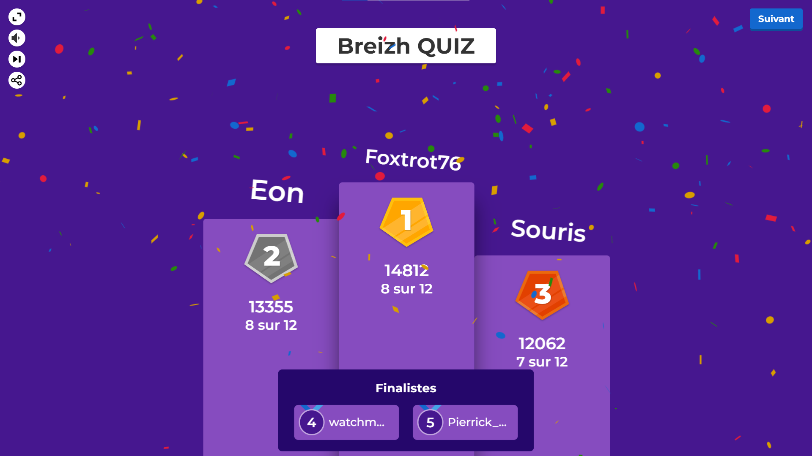
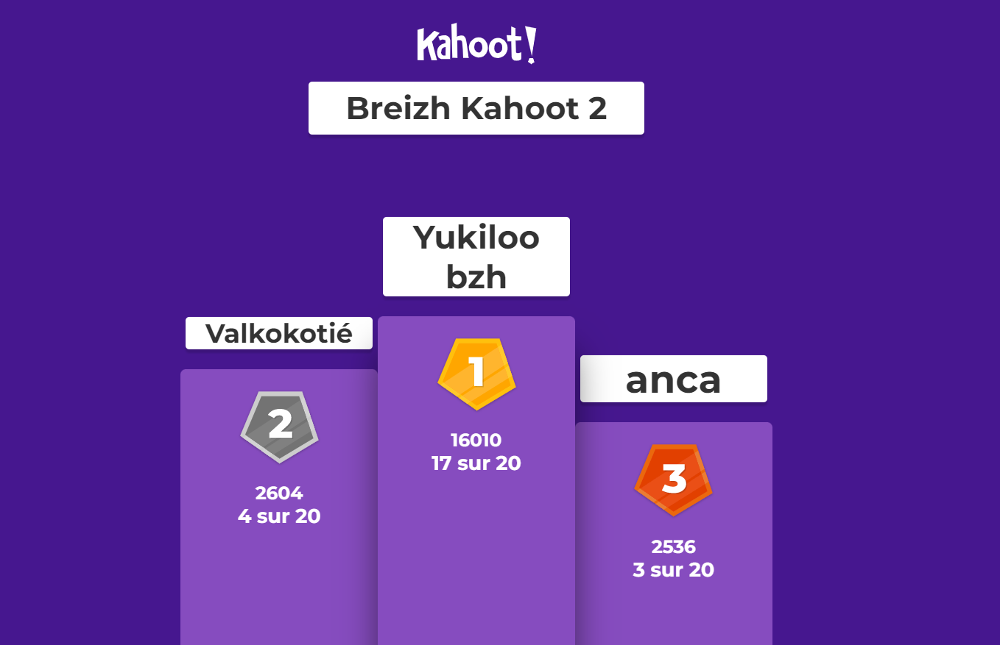

Les Évènements de l'Empire Breton, disponibles sur le serveur discord dans le salon #🎁-évènements , s'organisent différemment selon les events, pour plus de détails, regardez la page web ci-dessus. Certains évènements peuvent se dérouler dans le serveur, comme les Évènements Noël, Halloween ou Épidémie entre autres, ou en dehors du Serveur comme les Évènements Breizh Kahoot 1 et 2. Des soirées jeux sont desfois organisées par Yukilo, plus régulières que les Évènements normaux, elles sont généralement en vocal pour des jeux divers d'humour comme Limit Limit, Make it Meme ou Gartic Phone par exemple.
Évènement 1 - Breizh Kahoot
Le Breizh Kahoot est le premier évènement de l'Empire Breton, c'est un évènement qui a été annoncé le et qui s'est déroulé le à . Cet évènement a eu lieu en vocal, et en même temps sur le jeu éducatif Kahoot accessible par navigateur web ou par l'application mobile. Le thème de ce Kahoot était La Bretagne et la Langue Bretonne. À la suite de cet évènement, la note moyenne donnée pour cette évènement par les participants était de 17/20.


Logo du Breizh Kahoot
Podium du Breizh Kahoot
Évènement 2 - Breizh Kahoot 2
Le Breizh Kahoot 2 est le deuxième évènement de l'Empire Breton, c'est un évènement qui a été annoncé le et qui s'est déroulé le à . Cet évènement a eu lieu en vocal, et en même temps sur le jeu éducatif Kahoot accessible par navigateur web ou par l'application mobile. Le thème de ce Kahoot était La Bretagne, du Royaume au Duché. En raison du peu de personnes présentes à cet évènement, les questions du Breizh Kahoot 2 ont été reposées chacune leur tour dans Quiz

Logo du Breizh Kahoot 2
Podium du Breizh Kahoot 2
Évènement 3 - Évènement Épidémie
L'Évènement Épidémie est le troisème évènement de l'Empire Breton, c'est un évènement qui a été annoncé le et qui s'est déroulé le à . Cet évènement a eu lieu en vocal, et en même temps sur le jeu éducatif Kahoot accessible par navigateur web ou par l'application mobile. Le thème de ce Kahoot était La Bretagne, du Royaume au Duché. En raison du peu de personnes présentes à cet évènement, les questions du Breizh Kahoot 2 ont été reposées chacune leur tour dans Quiz
 , s'organisent différemment selon les events, pour plus de détails, regardez la page web ci-dessus. Certains évènements peuvent se dérouler dans le serveur, comme les Évènements Noël, Halloween ou Épidémie entre autres, ou en dehors du Serveur comme les Évènements Breizh Kahoot 1 et 2. Des soirées jeux sont desfois organisées par Yukilo, plus régulières que les Évènements normaux, elles sont généralement en vocal pour des jeux divers d'humour comme Limit Limit, Make it Meme ou Gartic Phone par exemple.
, s'organisent différemment selon les events, pour plus de détails, regardez la page web ci-dessus. Certains évènements peuvent se dérouler dans le serveur, comme les Évènements Noël, Halloween ou Épidémie entre autres, ou en dehors du Serveur comme les Évènements Breizh Kahoot 1 et 2. Des soirées jeux sont desfois organisées par Yukilo, plus régulières que les Évènements normaux, elles sont généralement en vocal pour des jeux divers d'humour comme Limit Limit, Make it Meme ou Gartic Phone par exemple.